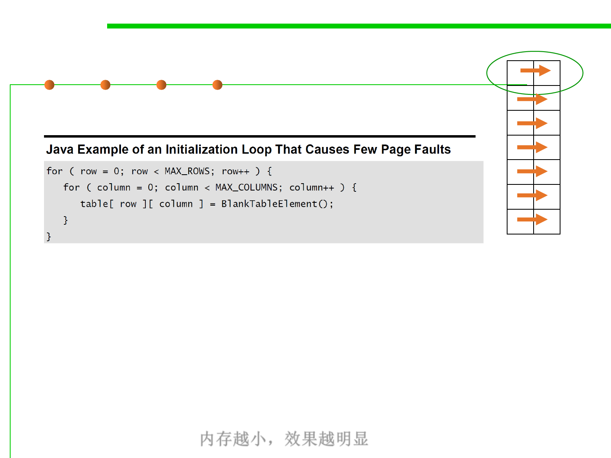

8.3 Code Tuning for Performance Optimization
Paging
4K
▪ The programmer restructured the loop this way:
▪ This code still causes a page fault every time it switches rows, but it
switches rows only MAX_ROWS times instead of MAX_ROWS *
MAX_COLUMNS times.
▪ The specific performance penalty varies significantly. On a machine
with limited memory, the second code sample to be about 1000 times
faster than the first code sample. On machines with more memory,
the difference to be as small as a factor of 2, and it doesn’t show up at
all except for very large values of MAX_ROWS and
MAX_COLUMNS. 内存越小，效果越明显